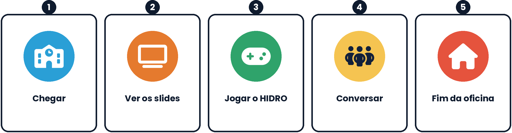
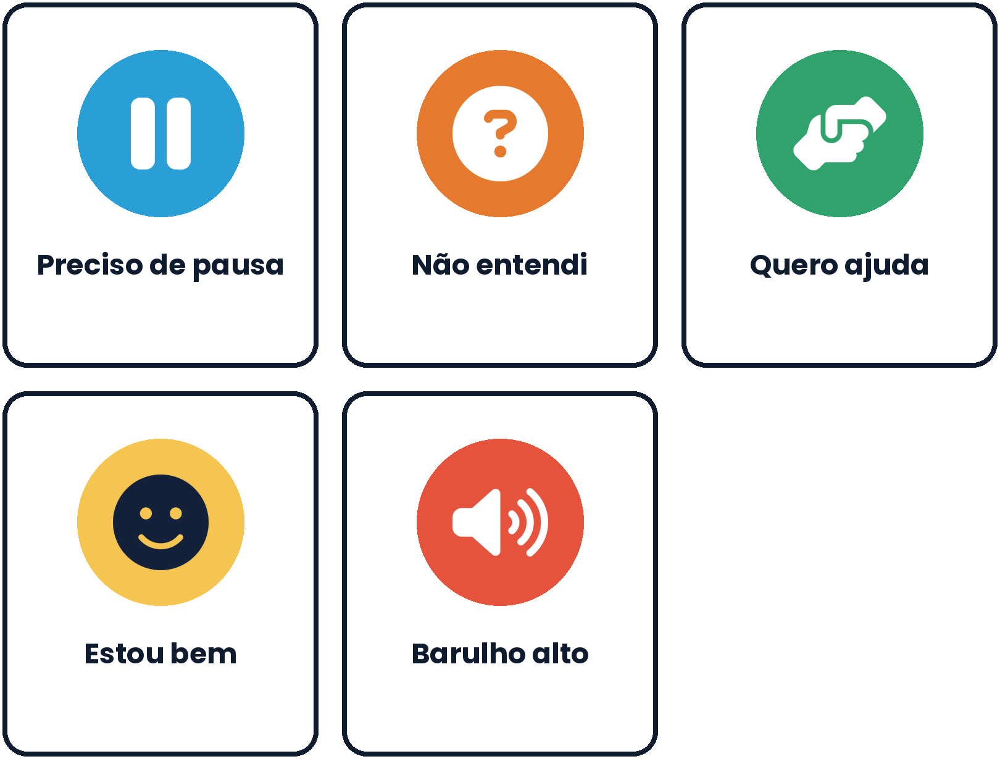

Inclusão: estudantes autistas e com altas habilidades
Como adaptar a oficina e o jogo, sem rótulos e com a participação da família e do AEE.
Sem rótulos e com a família
Os apoios abaixo são possibilidades, não receitas. Converse com o estudante, com a família e com o AEE.
Cada pessoa é diferente
Autismo e altas habilidades são muito variados. Os apoios abaixo são possibilidades, não receitas. Converse com o estudante, com a família e com o atendimento educacional especializado (AEE) e consulte o plano individual (PEI ou PDI), quando houver.
Desenho Universal para a Aprendizagem (DUA)
Planeje várias formas de engajar, de apresentar a informação e de expressar o que se aprendeu. O que ajuda um estudante costuma ajudar muitos (CAST, 2018).
Pense antes, não depois
Antecipe barreiras (sons, luzes, tempo, ambiguidade, trabalho em grupo) em vez de esperar que o problema apareça.
Ouça o estudante
Pergunte o que ajuda. Aceite o que ele diz, inclusive quando disser que quer observar, jogar sozinho ou parar.
Errar em segurança
O jogo é um espaço para tentar de novo. Evite usar as medalhas ou o game over para comparar estudantes.
Base legal e normativa
- Lei nº 12.764/2012: Política Nacional de Proteção dos Direitos da Pessoa com Transtorno do Espectro Autista.
- Lei nº 13.146/2015: Lei Brasileira de Inclusão da Pessoa com Deficiência (Estatuto da Pessoa com Deficiência).
- Política Nacional de Educação Especial na Perspectiva da Educação Inclusiva (MEC, 2008), que inclui estudantes com transtorno do espectro autista e com altas habilidades ou superdotação como público da educação especial.
Baixe o guia completo
Com agenda visual, história social, cartões de comunicação e ficha de apoio para imprimir.
Recursos do jogo e estratégias de sala
Recursos do HIDRO (versão 3.4)
| Recurso | O que faz |
|---|---|
| Modo calmo (tecla C ou menu PAUSAR) | Liga os dois recursos abaixo de uma vez. |
| Efeitos reduzidos | Sem relâmpagos, sem tremor de tela, sem o flash branco ao trocar de fase; chuva e escurecimento mais suaves. |
| Sem relógio | O perigo não cresce com o tempo. Dá para ler, pensar e explorar sem pressão. As decisões perigosas (por exemplo, entrar na água) continuam valendo. |
| Dificuldade (menu PAUSAR) | Fácil deixa o perigo crescer mais devagar (0,7x), sem desligar o relógio. Útil como passo intermediário antes do modo padrão. |
| Som | Botão SOM no topo da tela desliga todos os sons. |
| Alto contraste (tecla H) | Ajuda quem tem sensibilidade visual ou dificuldade de distinguir elementos. |
| Guia de próximo passo (tecla K) | A seta e a dica indicam o que fazer; quem prefere pode desligar. |
| Pausa (ESC ou botão PAUSAR) | Pausa a qualquer momento, sem perder o progresso. |
| Preferências salvas | Guia, contraste, efeitos reduzidos e sem relógio ficam salvos no aparelho. |
Os textos dos diálogos são longos e não há narração em áudio: um leitor de apoio pode ajudar.
Há linguagem figurada e expressões populares (por exemplo, bueiro); explique com antecedência.
Não há ajuste do tamanho da letra dentro do jogo; o zoom do navegador ou a tela cheia podem ajudar.
Os controles exigem coordenação. Em dupla, o estudante pode ser navegador em vez de piloto.
Antes
- Converse com a família e com o AEE sobre interesses, preferências e sinais de sobrecarga.
- Mostre a agenda visual da oficina e a história social (modelos abaixo).
- Ofereça uma experimentação prévia do jogo com o modo calmo ligado, em local calmo.
- Escolha o local: menos ruído, luz suave e possibilidade de sair para uma pausa.
Durante
- Avise antes de cada mudança de momento (por exemplo, em 5 minutos vamos jogar).
- Use linguagem literal, frases curtas e exemplos concretos. Evite ironia e pegadinhas.
- Defina papéis claros na dupla (piloto, navegador, repórter) e permita observar antes de jogar.
- Ofereça cartões de comunicação (preciso de pausa, não entendi, quero ajuda, estou bem, barulho alto).
- Dê tempo extra para ler e responder. Aceite respostas por escrito, desenho ou escolha entre opções.
- Se houver sobrecarga, pause sem discutir e retome quando o estudante quiser.
Depois
- Pergunte de forma simples o que funcionou e o que incomodou, e registre para as próximas aulas.
- Reconheça o esforço e os interesses do estudante (por exemplo, mapas, regras, sistemas ou sinais).
- Ofereça formas alternativas de participar da roda de conversa (escrever, desenhar, escolher cartões).
Agenda visual da oficina
Mostre os cinco passos antes de começar e vá marcando o que já foi feito.

{kind=link}
História social: hoje vamos jogar o HIDRO
Modelo para ler com o estudante antes da oficina. Adapte à linguagem dele.
- Hoje eu vou participar de uma oficina sobre chuvas fortes.
- Primeiro, o professor vai mostrar imagens e explicar o que acontece quando chove muito.
- Depois, eu vou jogar um jogo chamado HIDRO no computador ou no celular.
- No jogo, eu vou ser o Hidro. Vai aparecer chuva, e pode haver sons e efeitos de tela.
- Eu posso ligar o modo calmo. Assim, o jogo fica mais tranquilo e não tem relógio nem relâmpagos.
- Se eu quiser parar, posso apertar ESC ou o botão PAUSAR. Também posso mostrar o cartão de pausa.
- Se eu não entender uma parte, posso perguntar ao professor ou à minha dupla.
- Quando terminar, vamos conversar sobre o que aprendemos.
- Depois, a aula acaba e eu posso descansar.
Cartões de comunicação
Deixe ao alcance do estudante. Combine o que cada cartão significa e o que você vai fazer quando o receber.

{kind=link}
Enriquecer, não apenas acelerar
- A identificação é feita por avaliação especializada. Não rotule estudantes em sala: ofereça o enriquecimento a quem se interessar.
- Enriquecer é mais do que dar mais tarefas: é aprofundar, dar autonomia e propor problemas reais.
- Alguns estudantes têm dupla condição (altas habilidades e autismo). Combine os apoios deste guia.
- Evite usar o estudante como ajudante permanente do professor. Alterne papéis e proponha desafios próprios.
O Modelo Triádico de Enriquecimento (Renzulli) organiza a proposta em três tipos de atividade: Tipo I (exploratórias), Tipo II (de treinamento em grupo) e Tipo III (investigações de problemas reais, individuais ou em pequenos grupos).
Tipo I: explorar
Conhecer dados e mapas reais de risco e alertas do seu município (por exemplo, materiais do Serviço Geológico do Brasil e do Cemaden, quando disponíveis). Assistir a uma fala de um agente de Defesa Civil.
Tipo II: treinar habilidades
Método racional para estimar vazão (Q = 0,278 × C × i × A). Leitura de curvas de nível e perfis topográficos. Introdução ao QGIS ou ao Google Earth. Escrita técnica de um relatório curto.
Tipo III: investigar
Diagnóstico de risco da escola ou do bairro com mapa e proposta à gestão. Análise dos registros do Modo Professor da turma. Criação de uma fase e de um quiz para o HIDRO (em papel ou com apoio técnico). Produção de um podcast ou uma apresentação para os 6º anos.
Desafios dentro do jogo
- Conquistar ouro em todas as fases, com o guia desligado (tecla K).
- Explicar a um colega, sem jogar, por que cada missão vem na ordem em que vem.
- Jogar a mesma fase no nível DIFÍCIL (menu PAUSAR) e no Normal, e explicar por escrito o que mudou, usando o conceito de risco.
As atividades de enriquecimento estão nas caixas "Altas habilidades ou superdotação" da página Atividades.
Várias formas de engajar, representar e expressar
| Princípio (DUA) | Como o HIDRO e a oficina oferecem | Como você pode ampliar |
|---|---|---|
| Múltiplos meios de engajamento | Escolha de fase, medalhas, dificuldade ajustável, modo calmo, conversas de mito ou verdade. | Deixe escolher o fenômeno, o parceiro, o nível de dificuldade e o formato da atividade final. |
| Múltiplos meios de representação | Texto, imagens, mapa, gráficos, diagramas, glossário e sons. | Adicione leitura em voz alta, legendas, cartões com pictogramas e objetos concretos. |
| Múltiplos meios de ação e expressão | Jogo, quiz, conversas, cartão de emergência. | Aceite desenho, fala, escrita, maquete, vídeo curto ou cartões como resposta. |
Checklist do professor
- Conversei com a família e com o AEE?
- O local tem menos ruído e uma área para pausa?
- Testei o jogo e as configurações de acessibilidade (tecla C, SOM, tecla H)?
- Preparei agenda visual, história social e cartões de comunicação?
- Defini papéis claros na dupla e um sinal para pausa?
- Tenho atividades de enriquecimento para quem terminar antes ou quiser aprofundar?
Referências
CAST. Universal Design for Learning Guidelines version 2.2. 2018. Disponível em: https://udlguidelines.cast.org.
RENZULLI, J. S. The Enrichment Triad Model: a guide for developing defensible programs for the gifted and talented. Mansfield Center: Creative Learning Press, 1977.
BRASIL. Lei nº 12.764, de 27 de dezembro de 2012.
BRASIL. Lei nº 13.146, de 6 de julho de 2015.
BRASIL. Ministério da Educação. Política Nacional de Educação Especial na Perspectiva da Educação Inclusiva. Brasília: MEC/SEESP, 2008.